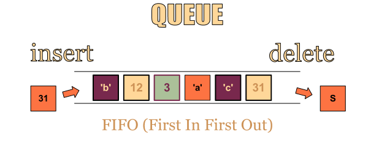
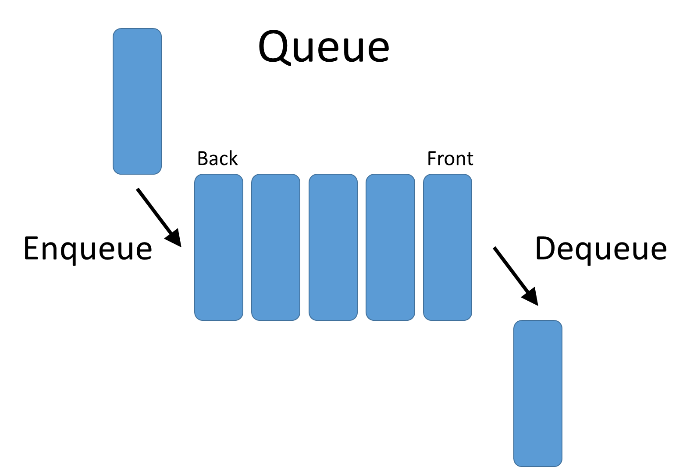

Queue is an abstract data structure, somewhat similar to Stacks. Unlike stacks, a queue is open at both its ends. One end is always used to insert data (enqueue) and the other is used to remove data (dequeue). Queue follows First-In-First-Out methodology, i.e., the data item stored first will be accessed first.

A real-world example of queue can be a single-lane one-way road, where the vehicle enters first, exits first. More real-world examples can be seen as queues at the ticket windows and bus-stops.
Queue Representation
As we now understand that in queue, we access both ends for different reasons. The following diagram given below tries to explain queue representation as data structure −

As in stacks, a queue can also be implemented using Arrays, Linked-lists, Pointers and Structures. For the sake of simplicity, we shall implement queues using one-dimensional array.